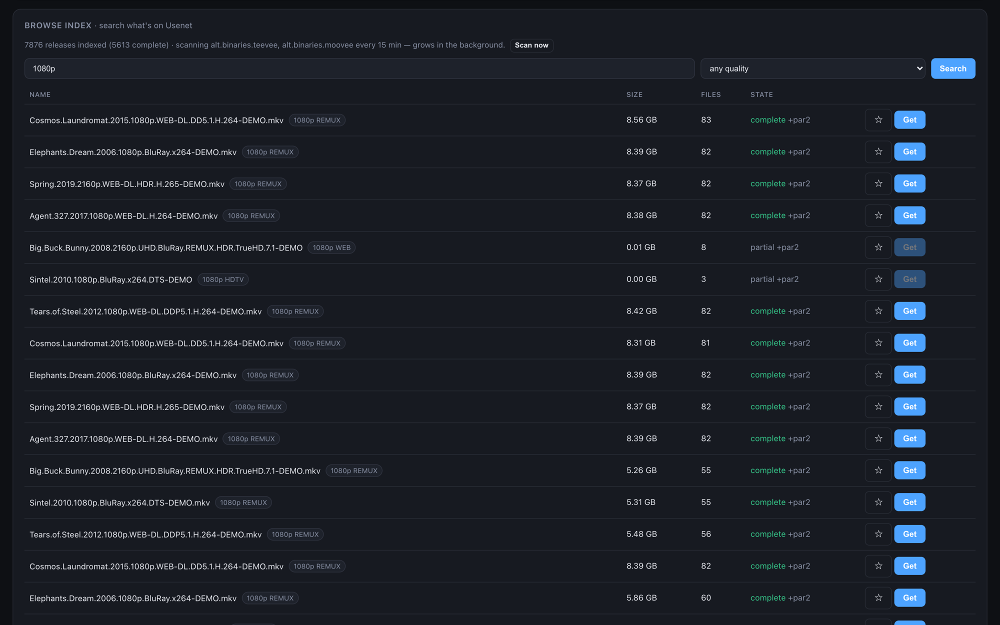
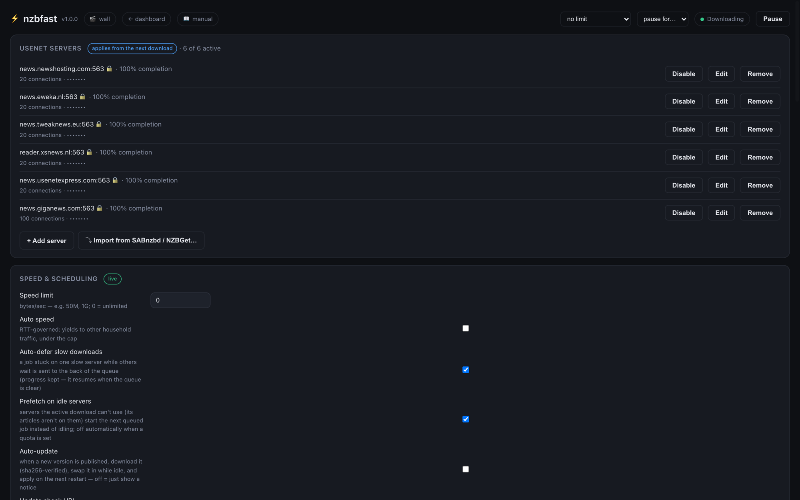
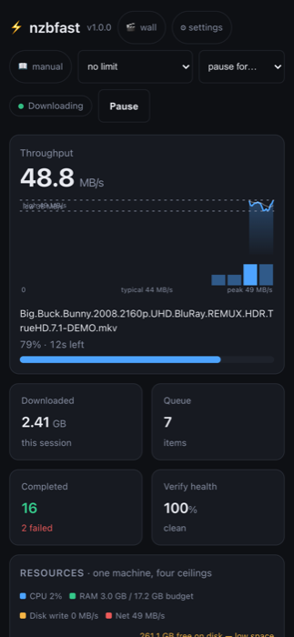

ازسرگیری ایمن در برابر خرابی- ژورنال در سطح مقاله؛ در میانهٔ کار kill −9 کنید و از همانجا که مانده بود ادامه میدهد.
API سازگار با SABnzbd + JSON-RPC NZBGet- Sonarr/Radarr/nzb360/LunaSea بدون تغییر کار میکنند.
ایندکسر داخلی- گروهها را به یک ایندکس محلی، قابلجستوجو و سروکنندهٔ Newznab اسکن میکند.
دیوار پوستر- تصاویر، امتیازها، بازیگران، شبکههای قسمت؛ بدون هیچ کلید API.
گرفتن خودکار فهرست پیگیری + ارتقای کیفیت- در اولین ظهور بگیر، تا کیفیت هدف ارتقا بده.
یک فایل اجرایی خودکفای واحد- par2 + باز کردن RAR تعبیهشده.
موتور و سرعت
NNTP خطلولهای. نگهداشتن چند درخواست در جریان بهازای هر اتصال، هم تأخیر رفتوبرگشت و هم تحلیل پنجرهٔ ازدحام TCP را شکست میدهد. ما جایی بین +12% تا +270% نسبت به واکشی سریالی میسنجیم، و حدود 8 اتصال بهازای هر سرور برای اشباع خط کافی است.
رمزگشایی yEnc با SIMD (rapidyenc، هستههای NEON/AVX) با 4.95 GB/s بهازای هر هسته کار میکند و همانجا در مسیر دریافت، بهمحض رسیدن بایتها، رمزگشایی میشود.
صف مشترک چند-سرور. ارائهدهندهها بدون هیچ تنظیمی خود را تا ~2% متعادل میکنند. نرخ واقعی هرکدام دنبال میشود و دنبالهٔ هر کار دوتایی ارسال میشود تا یک سرور کندِ تنها نتواند پایان کار را کش بدهد.
خیساندن میان-کاری. دنبالهٔ کار N با آغاز کار N+1 همپوشانی دارد، پس خط در سراسر یک صف از لبه تا لبه روشن میماند - اینجا 2% بیکاری در برابر 61% خاموشی SABnzbd در همان محک.
سگ نگهبان کار کند. دانلودی که روی یک سرور کند میخزد در حالی که بقیه بیکار نشستهاند به انتهای صف رانده میشود، پیشرفتش حفظ میشود، و بهمحض خلوت شدن صف از سر گرفته میشود.
پیشواکشی سرور بیکار - سروری که کار فعال نمیتواند از آن استفاده کند، چون مقالههایش آنجا ذخیره نشده، بهجای بیکار نشستن روی کار بعدیِ صف شروع میکند.
نردبان تنظیم اتصال. بهجای حدس زدن، میسنجد که توان عبوری هر ارائهدهنده واقعاً کجا از بالا رفتن بازمیماند - اتصالهای خواستهشده در برابر دادهشده - و همانجا مینشیند.
حاکم سرعت خودکار - یک حاکم RTT اختیاری بهسبک LEDBAT که به بقیهٔ ترافیک خانهٔ شما راه میدهد و آنچه از خط باقی میماند را برمیدارد.
محدودیت سرعت و زمانبند هفتگی - سقفهای قابلتنظیم زنده، یک زمانبندی به وقت محلی (امن نسبت به DST)، و یک «مکث برای N دقیقه» که خودش از سر میگیرد.
بودجهٔ حافظه. یک بودجهٔ سراسری RAM (خودکار: یکچهارم RAM، سقفدار و قابل بازنویسی). با تنگ شدن بودجه، اول بافرها کوچک میشوند، سپس داده به دیسک سرریز میکند و پس از آرام گرفتن کار بازخوانده میشود. هرگز swap نمیکند. یک کار 190 GB درون بودجهٔ 1 GB و با ~1.1 GB اوج RSS تمام میشود، و یک نمای 2 GB سنجیده و مستند برای دستگاههای NAS هست.
فشار برگشتی. یک دیسک کند بهجای اینکه بگذارد RAM پر شود، سوکتها را کند میکند - درون ±1% از یک سقف نوشتن میماند، و RAM زیر فشار در واقع افت میکند.
کاهش حافظه پس از کار - دیمن بهمحض بیکار شدن حافظهٔ آزادشده را به سیستمعامل بازمیگرداند و روی macOS بین کارها به حدود 8 MB میرسد.
خط پردازش تکگذر
یکبار نوشتن. مقالههای رمزگشاییشده مستقیماً در آفستهای نهایی فایلشان pwrite میشوند. بدون فایل موقت، بدون یک گذر مونتاژ جداگانه.
تأیید PAR2 در جریان. هر بلوک بهمحض رسیدن از بافرهای رمزگشایی با MD5 هش میشود، پس تأیید همان لحظهای تمام میشود که دانلود تمام میشود. این از بررسی سریعی که کلاینتهای دیگر به آن بسنده میکنند قویتر است، و هیچ هزینهای ندارد.
استخراج مستقیم - پستهای RAR حالت-ذخیره (بیشتر ریلیزهای scene) حین دانلود نگاشت و استخراج میشوند، پس جلدها اصلاً روی دیسک فرود نمیآیند. نوشتن روی دیسک به محتوا × 1.0 میرسد و دیسک موردنیاز به 1×، جایی که دیگران چیزی حدود 2× میخواهند.
ابهامزدایی. پستهای مبهم از روی فرادادهٔ PAR2 خودشان تغییرنام مییابند، نامهای بههمریختهٔ ROT13 نجات داده میشوند، و آشغالِ با نام هش دستهبندی و دروازهبندی میشود.
تعمیر دقیقاً-جامتناسب. بلوکهای خراب همان لحظه که رخ میدهند شناخته میشوند، پس فقط مجموعهٔ کمینه-بایت از جلدهای بازیابی واکشی میشود - یک حل کولهپشتی - و تعمیر جز بازههای خراب به چیزی دست نمیزند.
جایگزین فشرده و رمزگذاریشده - پستهای غیر-ذخیره از طریق موتور بومی RAR مادی و باز میشوند، همپوشان با بقیهٔ صف. مجموعههای رمزگذاریشده بهجای شکست خاموش، با یک پیام روشن پارک میشوند.
مدیریت رمز عبور. رمزهای عبور از API *arr، قرارداد نام فایل {{pw}}، یا فرادادهٔ NZB میآیند. برای هر آنچه باقی میماند، یک باز کردن 🔑 در داشبورد کار را به دست میگیرد: در پسزمینه باز میکند، سپس مثل همیشه بایگانی میکند.
ریلهای ایمنی. جلدهای منبعِ تعمیرشده تا وقتی استخراج مجدد اجرا میشود در برابر نوشتن محافظت میشوند، و یک کد خروج تنها زمانی «موفقیت» گزارش میدهد که حالت پایانی واقعاً قابلاستفاده باشد.
پایایی و موجودیت
بررسی موجودیت پیشپرواز. روبشهای STAT خطلولهای ظرف چند ثانیه یک ماتریس هر-مقاله × هر-سرور میسازند و کار را پیش از آنکه حتی یک بایت محتوا واکشی شود COMPLETE، REPAIRABLE یا IMPOSSIBLE علامت میزنند. یک پست ناممکن با واکشی تقریباً هیچچیز لغو میشود.
مسیریابی اتحادی. یک مقاله تنها زمانی گم بهشمار میآید که هر سرور زنده آن را رد کرده باشد؛ تا آن زمان به هر سروری که آن را دارد مسیریابی میشود. ستونهای فقرات در نگهداری و برداشتها با هم فرق دارند، پس اتحاد بیسروصدا پستهایی را کامل میکند که هیچ سرور تنهایی نمیتوانست.
ژورنال ایمن در برابر خرابی. ژورنال در سطح مقاله کار میکند. در میانهٔ کار یک kill −9 بفرستید و بازمیگردد و فقط آنچه را ماندگار نشده بود دوباره واکشی میکند؛ صف و تاریخچه از راهاندازیهای مجدد جان به در میبرند.
پارک و تلاش مجدد - کارهای ناموفق در تاریخچه پارک میشوند، و یک تلاش مجدد فقط تکههایی را که هنوز گماند میکشد.
آزموده با آشوب. یک سرور ساختگی NNTP در هر تک اجرای آزمون، ده سناریوی شکست سرتاسری را میراند - 430ها، خرابی، بریدگی، توقفها، سرورهای مرده، kill −9.
امتیازدهی پایایی ارائهدهنده. نرخ کامل بودن هر سرور برای همیشه نگه داشته و در داشبورد نشان داده میشود، با هشداری زیر 98%.
تحلیلگر تنوع سرورها. در سراسر سرورهای شما با STAT نمونهبرداری میکند و آنها را بر پایهٔ شکافهای مشترکشان خوشهبندی میکند، تا بتوانید بگویید کدام ارائهدهندههای «متفاوت» واقعاً همان ستون فقراتاند - پیش از آنکه بابت افزونگیای که در عمل ندارید بپردازید.
سهمیهها، حسابهای بلوکی و نگهبان دیسک - سهمیههای روزانه و ماهانه، بودجههای بایت مادامالعمر برای حسابهای بلوکی (بهمحض تمام شدن خودکار کنار گذاشته میشوند)، مکث کمبود دیسک، و تاریخچهٔ مصرف روزانهٔ هر ارائهدهنده.
تشخیص تکراری - dupekey و dupescore، با یک جایگزینِ نگهداشتهشده که همان لحظه که یک گرفتن شکست میخورد خودکار ارتقا مییابد.
مسیریابی آگاه از نگهداری. پستهای قدیمیتر از نگهداری یک سرور بهکلی از آن رد میشوند، و هر چیزی که هیچ سروری نتواند سرو کند بهجای چرخیدن بیدرنگ شکست میخورد.
خودکارسازی و یکپارچهسازیها
API سازگار با SABnzbd - کل سطحی که *arrها واقعاً استفاده میکنند: addfile/addurl، دستهها، اولویتها، مکث/ازسرگیری هر کار، تلاش مجدد، صفحهبندی، کلیدهای API دولایه. Sonarr و Radarr چنان با آن حرف میزنند که گویی SABnzbd است.
نمای JSON-RPC NZBGet. nzb360، LunaSea و دیگر کنترلهای راه دور NZBGet بدون تغییر متصل میشوند.
سرور Newznab. ایندکس محلی شما به t=search/tvsearch/movie پاسخ میدهد، پس *arrها میتوانند اسکنهای خودتان را همچون یک ایندکسر ببینند.
گرفتن خودکار RSS - فیدهایی که با یک زبان بهسبک NZBGet فیلتر میشوند، بهصورت زنده از داشبورد افزوده و ویرایش میشوند.
فهرست پیگیری. سریالها و فیلمهایی را که میخواهید نام ببرید، حتی آنهایی که هنوز پخش نشدهاند. هر قسمت در اولین ظهورش گرفته میشود و تا رسیدن به کیفیت هدف شما (مثلاً 720p ← 1080p REMUX) ارتقا مییابد، و نسخهٔ جایگزینشده تنها پس از آنکه ارتقا تأیید شد حذف میشود. یک تقویم تاریخ پخش نشان میدهد چه چیزی در راه است.
پوشهٔ پایش. یک .nzb داخلش رها کنید تا دانلود شود؛ فایل بهمحض اینکه گرفته شد ناپدید میشود.
پوشههای هوشمند - قواعد عبارتباقاعده، کلیدواژه و اندازه، دانلودها را هنگام بهصفرفتن به دستهها مرتب میکنند، با بایگانی اختیاری TV به Show/Season NN/Show - S01E02.ext.
قواعد پاکسازی - پسوندهای آشغال بهمحض تمام شدن یک کار حذف میشوند.
اسکریپتهای پسپردازش. اینها قرارداد محیطیِ SAB_* از SABnzbd را رعایت میکنند، پس همان اسکریپتهایی که از قبل دارید بیکموکاست اجرا میشوند.
مهاجرت یککلیکی. سرورها را از یک ini از SABnzbd یا یک conf از NZBGet وارد میکند، و اگر تنها همان را بیابد sabnzbd.ini را مستقیم میخواند.
دریافت Spotnet - تأیید امضای spot و ساخت NZB، درست همانجا درونساخت.
ایندکسر و دیوار پوستر
گروههای موردعلاقهٔ خود را به یک ایندکس خصوصی اسکن کنید، سپس نتیجه را بهصورت یک
دیوار پوستر مرور کنید. تکتک اجزای فراداده از منابع عمومی بدون کلید کشیده میشود که نصب خودتان آن را میآورد -
هیچ کلید APIای نیست که برایش التماس کنید.
اسکنر پیوستهٔ گروه. اسکنهای افزایشی OVER بر اساس زمانبندی شما با ~43k هدر/ثانیه روی اتصالهای پخششده اجرا میشوند. اولین اسکنها بر اساس تاریخ دوبخشی میشوند، پس --max-age 2y سالها هدر را در حدود 20 کاوش رد میکند.
دروازههای ورودی - فیلترهای نوع، سال، رزولوشن، زبان و اندازه اسپم ایندکسر را از پایگاه دادهٔ شما بیرون نگه میدارند، و آشغال مبهم بهطور پیشفرض گرفته و دروازهبندی میشود.
تجزیهگر نام scene. عنوان، سال، قسمت، کیفیت و منبع را از ریشههای دنیای واقعی بیرون میکشد - از جمله روزانههای کددار تاریخ، کدهای چند-قسمتی و نامهای مبهمشده با ROT13 - و ریلیزها را تا یک کارت بهازای هر عنوان یکتا میکند.
جستوجوی آنی - جستوجو حین تایپ با فیلترهای کیفیت، دکمههای پیگیری هر ردیف، و نشانهای کیفیت در همهجا.
غنیسازی بدون کلید. TVmaze برای TV، iTunes Search برای فیلم، بهعلاوهٔ مجموعهدادگان عمومی امتیاز، Wikidata، Wikipedia و AniList، پوسترها، امتیازها و شمار آرا، بازیگران، ژانرها و خلاصهها را پر میکنند. کلیدهای OMDb و TMDB اگر داشته باشید کار میکنند، اما هیچکدام لازم نیست.
شبکههای قسمت - تراشههای هر فصل، با بهترین انکدِ هر قسمت یک کلیک تا دانلود، پکهای فصلِ نشاندار، و یک «پیگیری سری» روی سربرگ هر فصل.
ردیفهای پرطرفدار - نوارهای جدید-این-هفته و داغِ-اکنون که از فراوانی پست ساخته میشوند.
هر چیزی را اصلاح کنید. تطبیق اشتباه؟ از میان نامزدها انتخاب کنید یا خودتان هویت درست را تایپ کنید - هر چیزی که با دست تنظیم کنید هرگز بازنویسی نمیشود. یک پوستر را به یک URL نشانه بگیرید یا یکی آپلود کنید. یک دکمه یک عنوان را دوباره غنی میکند؛ دکمهای دیگر کل ایندکس را پاک و بازسازی میکند.
پیشنمایش و کتابخانه
پیشنمایش پیش از اتمام. ▶ پخش یک .m3u را که دیمن سرو میکند به پخشکنندهٔ سیستمعامل شما میدهد، تا بتوانید بدون انتظار برای تکمیل، مطمئن شوید که یک دانلود همان چیزی است که میخواستید. جلوتر که بپرید، مقالههایی که نیاز دارید به جلوی صف میجهند.
حالت کتابخانه. از طریق اشارهگرهای .strm، *arrها تکمیل را آنی میبینند؛ یکی را پخش کنید و دانلود واقعی با بالاترین اولویت آغاز میشود و در پسزمینه دوباره تأیید میکند.
داشبورد و تنظیمات

کشوی صف: میلههای هر فایل، بلوکهای تأیید، سهم هر سرور.

هر تنظیم در مرورگر قابل ویرایش - بیشترشان زنده اعمال میشوند.

چیدمان گوشی درستوحسابی، همان دیمن.
نمودارهای زنده، بدون کتابخانه. همهچیز یک بار در ثانیه نمونهگیری میشود - یک ناحیهٔ توان عبوری، ناحیهٔ انباشتهٔ هر ارائهدهنده، یک خطزمان سلامتتأیید، سوختن صف، یک هیستوگرام سرعت - و نمودارها هرچه مرورگر را پهنتر کنید پنجرهٔ زمانیشان را پهنتر میکنند.
پایشگر منابع - پردازنده، RAM در برابر بودجه، نوشتن دیسک و شبکه روی یک نمودار واحد، با یک هشدار کمبود دیسک.
جدول رتبهبندی ارائهدهنده. سرورها خودشان را بر اساس کارایی زنده دوباره مرتب میکنند، و هرکدام بایتهای نشست، شمار اتصال، بهرهوری و پایایی را نشان میدهد.
مدیریت صف - بکشید تا ترتیب عوض شود، اولویت و دسته را درجا تنظیم کنید، یک کشوی جزئیات هر دانلود باز کنید، خوشبینانه مکث کنید، یا «مکث برای N دقیقه».
همهچیز در مرورگر قابل تنظیم است - سرورها (با آزمونهای اتصال زنده)، سرعت و زمانبندی، اتصالها/پنجره/رمزگشاها، دیسک و سهمیه، پوشههای پایش و اسکریپتها، دروازههای ایندکسگذاری، کتابخانه، RSS، و امنیت با چرخش کلید. تنظیمات از راهاندازی مجدد جان به در میبرند.
عیبیابی درونساخت - یک نمایشگر گزارش درونرابط، یک محک سیستم که سقفهای شبکه، پردازش و دیسک شما را مییابد و میگوید با آنها چه کنید، تحلیلگر تنوع سرورها، و نردبان اتصال.
مصرف داده - میلههای انباشتهٔ 14-روزهٔ هر ارائهدهنده، تاریخچهٔ روزانه، و شمارندههای مادامالعمر برای حسابهای بلوکی.
کیفیت زندگی. کشیدن و رها کردن یک .nzb در هرجا، اعلانهای دسکتاپ، صداهای اتمام، یک جادوگر اولین اجرا، و serve --open.
استقرار
یک فایل اجرایی خودکفای واحد. par2 و باز کردن RAR کد بومیای هستند که درون باینری کامپایل شده - هیچچیز در اولین اجرا استخراج نمیشود، و نه زماناجرایی هست و نه نصابی که سرتان را درد بیاورد.
macOS، درجهیک - یک باینری یونیورسال برای Apple Silicon و Intel، یک اپ نوار-منوی بومی SwiftUI، یک واحد launchd، و یک فرمول Homebrew.
Windows - یک exe کاملاً ایستای x64 که روی Windows 10 و 11 استاندارد اجرا میشود، با یک راهانداز دوکلیکی و راهاندازی راهنماییشده.
Linux و Docker - یک واحد systemd سختشده، یک تصویر Docker چندمرحلهای با نقطهٔ ورود PUID/PGID بهسبک linuxserver، و یک فایل compose در جعبه. همهٔ پلتفرمها ←
راهاندازی راهنماییشده. جادوگر nzbfast setup را اجرا کنید، یا بگذارید یک پیکربندی موجود SABnzbd یا NZBGet را خودکار تشخیص دهد. اولین دانلودتان در کمتر از دو دقیقه در حال اجرا خواهد بود.